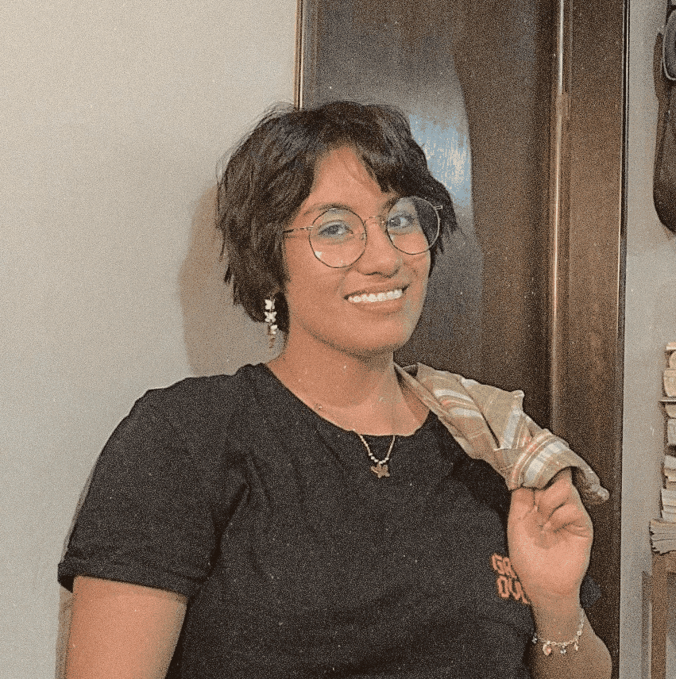

Zureyma Quetzaili Manrique Santiago | WDD 130

Hello! My name is Zureyma Manrique and I'm from Mexico. I started my programming career when I was 18 years old, but I put it aside because I left to serve a mission in Monterrey, Mexico. I came back in May 2024 since then, I decided to start my degree related to programming..